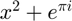
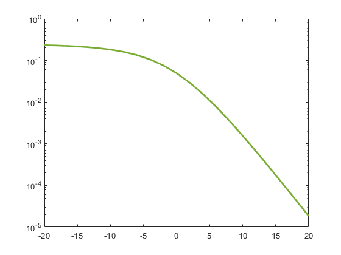
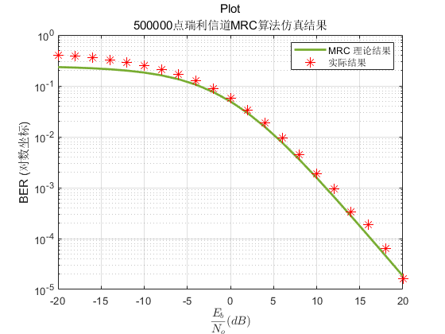

瑞利信道 - 一发两收 MRC合并算法仿真
Contents
变量声明
M = 2，代表BPSK
M = 2; % 数据点个数 len = 500000; % 随机生成的原始数据 data = randi([0 1], 1, len); % 信噪比范围 (dB) EbN0dB = -20 : 2 : 20;

理论结果
平均信噪比
EbN0 = 10.^(EbN0dB/10); t = sqrt(EbN0 ./(1+EbN0)); Pb = 1/8 * (1-t).^2 .* (t+1).*(t+2); semilogy(EbN0dB, Pb,'LineWidth', 2,'color','#77AC30'); hold on
仿真结果
% bpsk调制后信号 modSig = bpskMod(data); % 接收到的信号，提前声明，加快循环速度 recSig = zeros(2, len); % 信号通过瑞利信道衰减 Gk，提前声明，加快循环速度 G = zeros(2, len); % 合并比 Ak，提前声明，加快循环速度 A = zeros(2, len); % 合并后的信号，提前声明，加快循环速度 finSig = zeros(1, len); % 解调获得的数据，提前声明，加快循环速度 finData = zeros(1, len); % 错误概率 errRate = zeros(1, length(EbN0dB)); % 仿真开始 for i = 1:length(EbN0dB) % 通过瑞利信道，并叠加高斯噪声 [recSig(1,:), G(1,:)] = RayAWGN(modSig, EbN0dB(i), M); [recSig(2,:), G(2,:)] = RayAWGN(modSig, EbN0dB(i), M); % 合并比计算 A = conj(G); % 乘以合并系数 recSig = recSig .* A; % 将两个信号叠加 finSig = recSig(1 , :) + recSig(2 , :); finData = bpskDemod(finSig); [~, errRate(i)] = ErrRate(data, finData); end semilogy(EbN0dB, errRate, 'r*','LineWidth', 0.7, 'MarkerSize' , 9); grid on title({'Plot', [num2str(len), '点瑞利信道MRC算法仿真结果']}) legend('MRC 理论结果', '实际结果') xlabel('$$\frac{E_b}{N_o}\space (dB)$$', 'Interpreter', 'latex') ylabel('BER (对数坐标)')